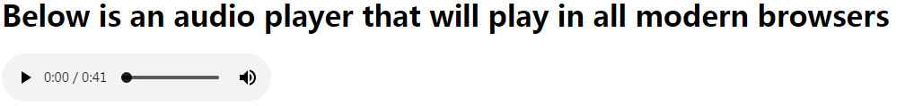

视频和音频内容
任务目标：
在web页面中嵌入视频和音频
添加字幕
<video>标签
<video>
src属性：可以直接去掉转换成<source>标签放在<video>中，
<source>标签：空元素！！ 属性:src和type。
type便于浏览器迅速跳过不支持的音视频格式。
type="video/webm"或type="video/mp4" 音频则是 type="audio/mp3"或type="audio/ogg"
controls属性：显示停止和播放，进度条，音量，全屏等。
width、height属性:如果设置的宽高(大了)，与原本视频宽高比不同，视频未填充的部分将显示为默认的背景颜色。
autoplay属性：自动播放(不推荐)，在preload前面执行。
loop属性：循环播放(不推荐)
muted属性：默认关闭声音
poster属性：视频预览图,poster="poster.png"
preload属性：3个值可选，默认preload="auto"即没有添加preload属性，preload默认是auto
"none" ：不缓存视频
"auto"：如果需要，可以下载视频
"metadata" ：仅缓冲文件的元数据
video下的段落:当浏览器不兼容<video>标签时显示段落->回退机制
<video controls width="400" height="400"
autoplay loop muted
poster="poster.png">
<source src="rabbit320.mp4" type="video/mp4">
<source src="rabbit320.webm" type="video/webm">
<p>Your browser doesn't support HTML5 video. Here is a <a href="rabbit320.mp4">link to the video</a> instead.</p></video>
<audio>标签
<audio>
<audio>标签不支持 width/height 属性 ，也不支持 poster 属性 — 由于其并没有视觉部件。<video>其他属性都支持。
<audio controls>
<source src="viper.mp3" type="audio/mp3">
<source src="viper.ogg" type="audio/ogg">
<p>Your browser doesn't support HTML5 audio. Here is a <a href="viper.mp3">link to the audio</a> instead.</p></audio>

显示字幕
<track> 文本轨道
空元素！!
放在<video>或<audio>之中，<source>之后
src属性
kind属性:字幕文本类型 ——> subtitles ：翻译字幕，适用于看不懂的用户 默认值是subtitles:即没有添加kind属性，kind默认是subtitles
captions： 同步翻译对白 ，适用于设备静音或听不见声音的用户
descriptions： 将文字转换为音频 ，适用于视频不可见或失明的用户
srclang属性：告诉浏览器字幕文本的语言
label属性:cc选择字幕时出现的文字
default属性:默认会显示一个字幕。一个媒体元素中有多个track只能有一个default来优先显示字幕。
<video controls>
<source src="example.mp4" type="video/mp4">
<source src="example.webm" type="video/webm">
<track kind="subtitles" src="subtitles_en.vtt" srclang="en">
</video>
火狐浏览器效果图：
<!DOCTYPE html>
<html>
<head>
<meta charset="utf-8" />
<title>Video Player with Subtitles - Mozilla</title>
<meta name="viewport" content="width=device-width, initial-scale=1.0" />
<link rel="stylesheet" href="css/styles.css" />
</head>
<body>
<h1>Sintel</h1>
<figure id="videoContainer" data-fullscreen="false">
<video id="video" controls preload="metadata">
<source src="video/sintel-short.mp4" type="video/mp4">
<source src="video/sintel-short.webm" type="video/webm">
<track label="English" kind="subtitles" srclang="en" src="subtitlesvtt/sintel-en.vtt" default>
<track label="Deutsch" kind="subtitles" srclang="de" src="subtitlesvtt/sintel-de.vtt">
<track label="Español" kind="subtitles" srclang="es" src="subtitlesvtt/sintel-es.vtt">
</video>
<figcaption>
© copyright Blender Foundation | <a href="http://www.sintel.org">www.sintel.org</a>
</figcaption>
</figure>
</body>
</html>
课外扩展:
IE10+浏览器，虽然也支持.vtt字幕，但是，却需要定义MIME type，否则会无视WebVTT格式。比较简单方式就是在字幕所在文件夹下面添加个.htaccess文件，保存类型为所有文件，里面写上AddType text/vtt .vtt。
在加拿大和美国不同，如果你使用 Subtitles 这个词，一般代表的是观看者具备听懂该语言的能力，没有听力障碍，但是视频中说话的人也许吐词不清，或因其他原因给观众提供字幕。而 Caption 这个词，则有辅助听力障碍的人士用意。Caption 一般还包含了效果音的提示，这些声音正常人可以分辨，而对于障碍人士则必须通过字幕。
subtitiles就对话字幕，caption事无巨细:汽车刹车都有
WebVTT格式字幕：经过实践，可能因为谷歌浏览器的安全功能不允许本地vtt文件在Chrome中运行，需要在服务器上运行它。QQ浏览器和IE没有字幕选项，然而火狐浏览器可以显示字幕！
谷歌浏览器效果图：
参考资料网址：